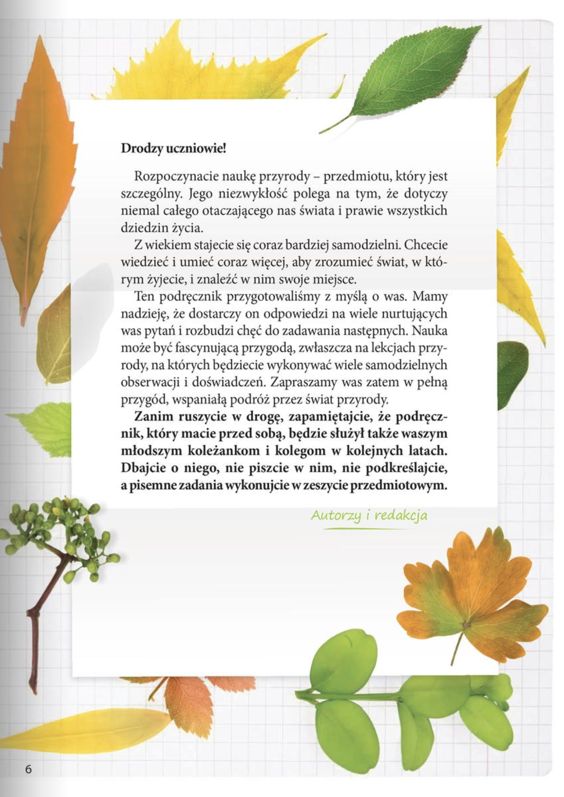
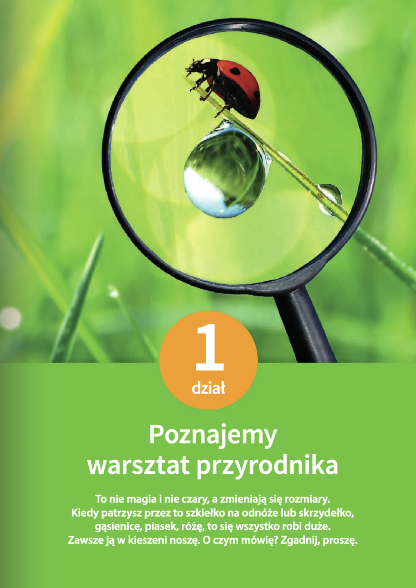
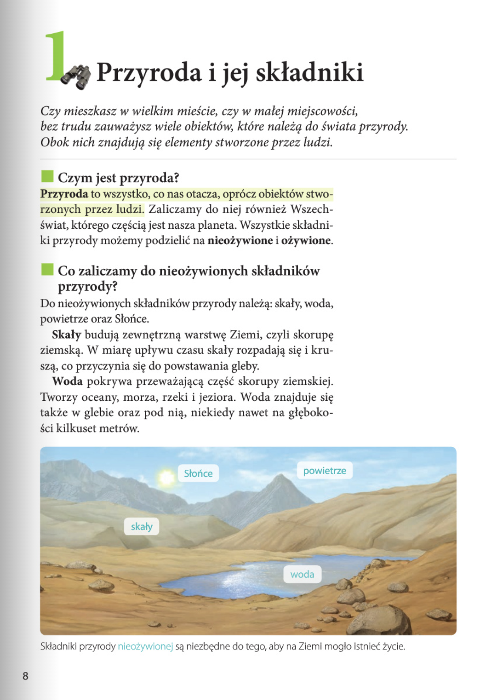
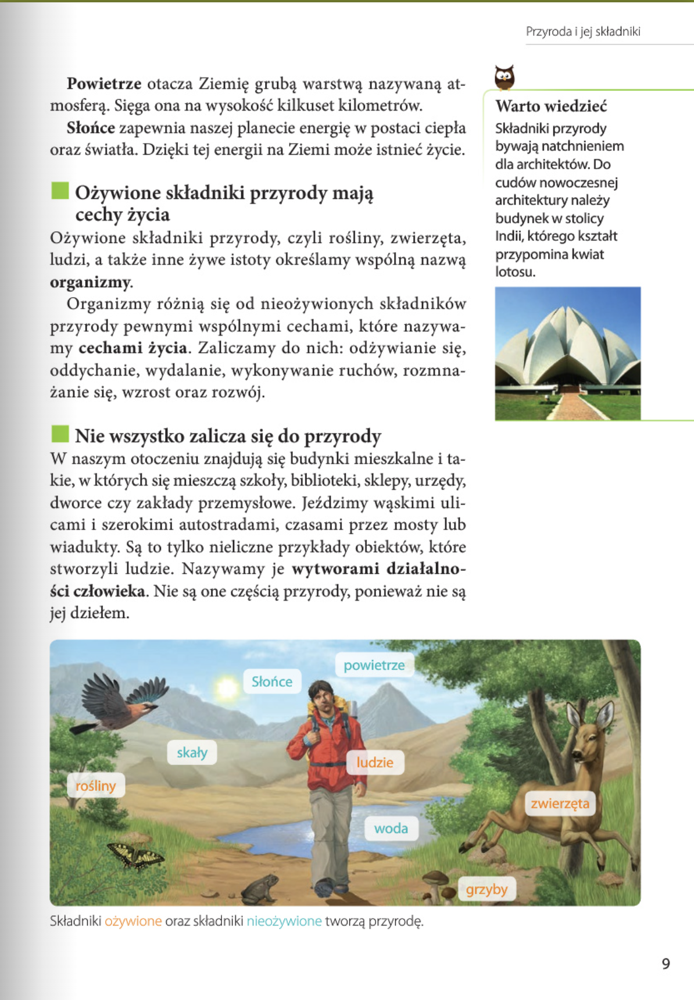
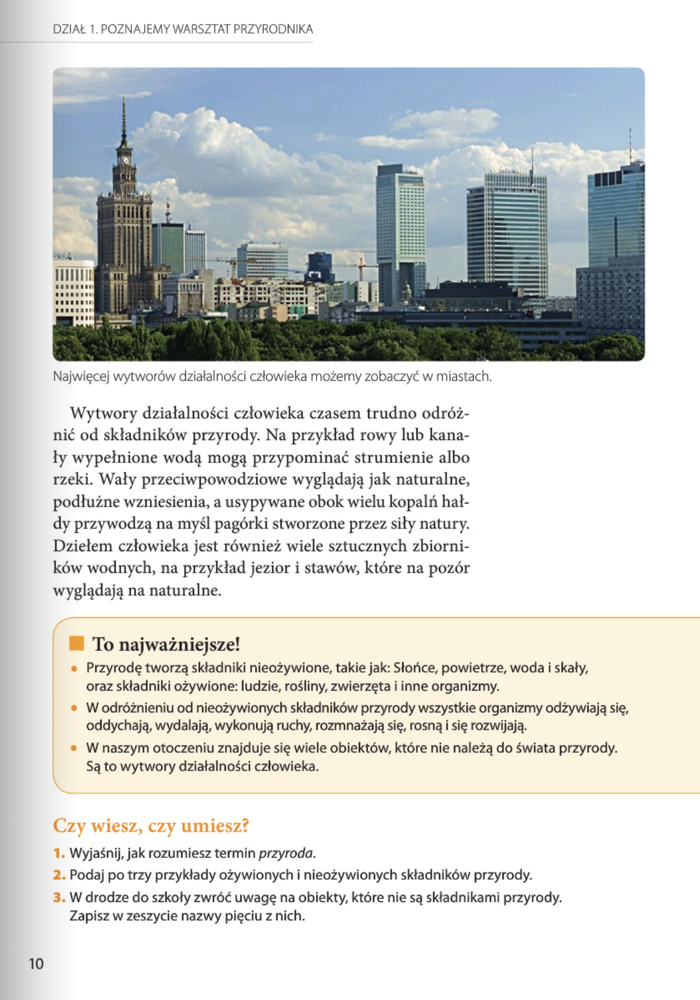

Przyroda
DZIAŁ 1. POZNAJEMY WARSZTAT PRZYRODNIKA: 8-33
Lekcja 1. Przyroda i jej składniki: 8

Drodzy uczniowie!
Rozpoczynacie naukę przyrody – przedmiotu, który jest szczególny. Jego niezwykłość polega na tym, że dotyczy niemal całego otaczającego nas świata i prawie wszystkich dziedzin życia.
Z wiekiem stajecie się coraz bardziej samodzielni. Chcecie wiedzieć i umieć coraz więcej, aby zrozumieć świat, w którym żyjecie, i znaleźć w nim swoje miejsce.
Ten podręcznik przygotowaliśmy z myślą o was. Mamy nadzieję, że dostarczy on odpowiedzi na wiele nurtujących was pytań i rozbudzi chęć do zadawania następnych. Nauka może być fascynującą przygodą, zwłaszcza na lekcjach przy rody, na których będziecie wykonywać wiele samodzielnychobserwacji i doświadczeń. Zapraszamy was zatem w pełną przygód, wspaniałą podróż przez świat przyrody.
Zanim ruszycie w drogę, zapamiętajcie, że podręcznik, który macie przed sobą, będzie służył także waszym młodszym koleżankom i kolegom w kolejnych latach. Dbajcie o niego, nie piszcie w nim, nie podkreślajcie, a pisemne zadania wykonujcie w zeszycie przedmiotowym.
Дорогие ученики!
Вы начинаете изучать природоведение – предмет особенный. Его уникальность в том, что он охватывает почти весь окружающий нас мир и затрагивает практически все сферы жизни.
С возрастом вы становитесь всё более самостоятельными. Вам хочется знать и уметь всё больше, чтобы понимать мир, в котором вы живёте, и найти в нём своё место.
Этот учебник мы подготовили специально для вас. Надеемся, что он даст ответы на многие ваши вопросы и пробудит желание задавать новые. Учёба может быть увлекательным путешествием, особенно на уроках природоведения, где вы будете проводить самостоятельные наблюдения и опыты. Мы приглашаем вас в полное приключений и открытий удивительное путешествие по миру природы.
Перед тем как отправиться в путь, запомните: учебник, который у вас в руках, будет служить и вашим младшим товарищам в следующие годы. Заботьтесь о нём: не пишите и не делайте в нём пометок. Все письменные задания выполняйте в рабочей тетради по предмету.
1 dział. Poznajemy warsztat przyrodnika
To nie magia i nie czary, a zmieniają się rozmiary. Kiedy patrzysz przez to szkiełko na odnóże lub skrzydełko, gąsienicę, piasek, różę, to się wszystko robi duże.
Zawsze ją w kieszeni noszę. O czym mówię? Zgadnij, proszę.
Раздел 1. Познаём мастерскую юного натуралиста
Это вовсе не колдовство и не чудеса, а всё меняет свои размера. Когда смотришь сквозь это стеклышко на лапку или крылышко, на гусеницу, песчинку, розу — всё становится гораздо больше.
Я всегда ношу её в кармане. О чём я говорю? Угадай-ка, сами!


1 Przyroda i jej składniki
Czy mieszkasz w wielkim mieście, czy w małej miejscowości, bez trudu zauważysz wiele obiektów, które należą do świata przyrody. Obok nich znajdują się elementy stworzone przez ludzi.
Czym jest przyroda?
Przyroda to wszystko, co nas otacza, oprócz obiektów stworzonych przez ludzi. Zaliczamy do niej również Wszechświat, którego częścią jest nasza planeta. Wszystkie składniki przyrody możemy podzielić na nieożywione i ożywione.
Co zaliczamy do nieożywionych składników przyrody?
Do nieożywionych składników przyrody należą: skały, woda, powietrze oraz Słońce.
Skały budują zewnętrzną warstwę Ziemi, czyli skorupę ziemską. W miarę upływu czasu skały rozpadają się i kruszą, co przyczynia się do powstawania gleby.
Woda pokrywa przeważającą część skorupy ziemskiej. Tworzy oceany, morza, rzeki i jeziora. Woda znajduje się także w glebie oraz pod nią, niekiedy nawet na głębokości kilkuset metrów.
Składniki przyrody nieożywionej są niezbędne do tego, aby na Ziemi mogło istnieć życie.
Powietrze otacza Ziemię grubą warstwą nazywaną atmosferą. Sięga ona na wysokość kilkuset kilometrów.
Słońce zapewnia naszej planecie energię w postaci ciepła oraz światła. Dzięki tej energii na Ziemi może istnieć życie.
Ożywione składniki przyrody mają cechy życia
Ożywione składniki przyrody, czyli rośliny, zwierzęta, ludzi, a także inne żywe istoty określamy wspólną nazwą organizmy.
Organizmy różnią się od nieożywionych składników przyrody pewnymi wspólnymi cechami, które nazywamy cechami życia. Zaliczamy do nich: odżywianie się, oddychanie, wydalanie, wykonywanie ruchów, rozmnażanie się, wzrost oraz rozwój.
Nie wszystko zalicza się do przyrody
W naszym otoczeniu znajdują się budynki mieszkalne i takie, w których się mieszczą szkoły, biblioteki, sklepy, urzędy, dworce czy zakłady przemysłowe. Jeździmy wąskimi ulicami i szerokimi autostradami, czasami przez mosty lub wiadukty. Są to tylko nieliczne przykłady obiektów, które stworzyli ludzie. Nazywamy je wytworami działalności człowieka. Nie są one częścią przyrody, ponieważ nie są jej dziełem.
Warto wiedzieć
Składniki przyrody bywają natchnieniem dla architektów. Do cudów nowoczesnej architektury należy budynek w stolicy indii, którego kształt przypomina kwiat lotosu.


POZNAJEMY WARSZTAT PRZYRODNIKA
Wytwory działalności człowieka czasem trudno odróżnić od składników przyrody. Na przykład rowy lub kanały wypełnione wodą mogą przypominać strumienie albo rzeki. Wały przeciwpowodziowe wyglądają jak naturalne, podłużne wzniesienia, a usypywane obok wielu kopalń hałdy przywodzą na myśl pagórki stworzone przez siły natury. Dziełem człowieka jest również wiele sztucznych zbiorników wodnych, na przykład jezior i stawów, które na pozór wyglądają na naturalne.
To najważniejsze!
- Przyrodę tworzą składniki nieożywione, takie jak: Słońce, powietrze, woda i skały, oraz składniki ożywione: ludzie, rośliny, zwierzęta i inne organizmy.
- W odróżnieniu od nieożywionych składników przyrody wszystkie organizmy odżywiają się, oddychają, wydalają, wykonują ruchy, rozmnażają się, rosną i się rozwijają.
- W naszym otoczeniu znajduje się wiele obiektów, które nie należą do świata przyrody. Są to wytwory działalności człowieka.
Czy wiesz, czy umiesz?
- Wyjaśnij, jak rozumiesz termin przyroda.
- Podaj po trzy przykłady ożywionych i nieożywionych składników przyrody.
- W drodze do szkoły zwróć uwagę na obiekty, które nie są składnikami przyrody.
Zapisz w zeszycie nazwy pięciu z nich.
- Przyroda to wszystko, co nas otacza, oprócz obiektów stworzonych przez człowieka. Zaliczamy do niej także Wszechświat, którego częścią jest nasza planeta, czyli Ziemia.
-
Ożywione składniki przyrody to na przykład:
- rośliny,
- zwierzęta,
- ludzie.
- skały,
- woda,
- powietrze.
- Wiedząc, że do składników przyrody nie zaliczamy wytworów działalności człowieka, zaobserwuj i zapisz w zeszycie przykłady pięciu obiektów, które widujesz w drodze do szkoły, a które nie są składnikami przyrody.